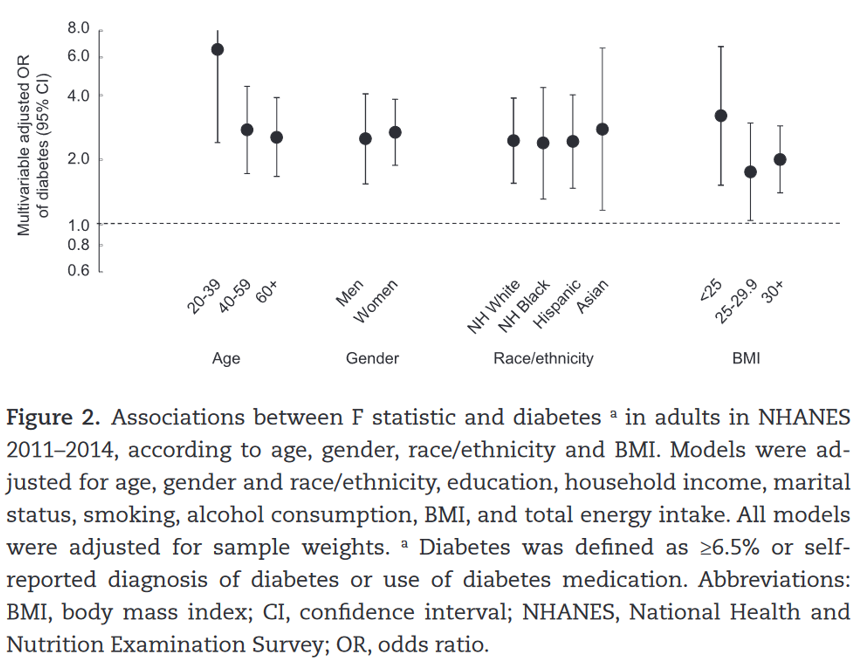

Publication Highlights
Rest-activity profiles among U.S. adults in a nationally representative sample: a functional principal component analysis
Int J Behav Nutr Phys Act. 2022;19:32. (IF 6.71)We identified four distinctive rest-activity profiles from 24-hour actigraphy using the functional principal components approach. Our association study provided abundant evidence suggesting that sociodemographic characteristics can shape rest-activity patterns, and these profiles are highly correlated with health status. Get Full Text
The association between rest-activity rhythms and glycemic markers: the US National Health and Nutrition Examination Survey
Sleep. 2021;zsab291. PMID: 34897522. (IF 5.14)We investigated the association between rest-activity characteristics derived from extended cosinor models and multiple glycemic markers across different demographics. Our findings suggest that weakened or disrupted rest-activity rhythm is associated with impaired glycemic control. Get Full Text

Real-time geospatial analysis identifies gaps in COVID-19 vaccination in a minority population
Sci Rep. 2021 Sep 13;11(1):18117. PMID: 34518570. PMCID: PMC8437959.(IF 5.13)We reported the effective use of real-time geospatial analysis to identify barriers and gaps in COVID-19 vaccination in a minority population living in South Texas on the US-Mexico Border, to inform vaccination campaign strategies. We developed 4 rank-based approaches to evaluate the vaccination gap at the census tract level, which considered both population vulnerability and vaccination priority and eligibility. We identified areas with the highest vaccination gaps using different assessment approaches. Get Full Text

Census Tract Patterns and Contextual Social Determinants of Health Associated With COVID-19 in a Hispanic Population From South Texas: A Spatiotemporal Perspective
JMIR Public Health and Surveill. 2021 Aug 5;7(8):e29205. PMID: 34081608.PMCID: PMC8354426. (IF 4.11)We investigated the contextual SDOH and their potential association with COVID-19 incidence at the census tract level. Our analysis provided a look at the SDOH at sufficient spatial granularity to detect local trends and hot spots for COVID-19 monitoring and control. Get Full Text

Patterns and risk factors of opioid-suspected EMS overdose in Houston metropolitan area, 2015-2019: A Bayesian spatiotemporal analysis
PLOS One. 2021;16(3):e0247050. PMID:33705402. PMCID: PMC7951926. (IF 3.24)We relied on emergency medical services data to investigate the geographical and temporal patterns in opioid-suspected overdose incidents in one of the largest and most ethnically diverse metropolitan areas (Houston Texas). Using a cross sectional design and Bayesian spatiotemporal models, we identified zip code areas with excessive opioid-suspected incidents, and assessed how the incidence risks were associated with zip code level socioeconomic characteristics. Get Full Text
Individual and Community Social Determinants of Health Associated With Diabetes Management in a Mexican American Population
Frontiers in Public Health. 2021;8:633340. PMID: 33614572. PMCID: PMC7888279. (IF 3.71)This study performed a secondary data analysis on 1,568 individuals who participated in Salud y Vida (SyV), a local diabetes and chronic disease management program, between October 2013 and September 2018 recruited from a local clinic. We developed the community-level indices representing different domains. Using Bayesian multilevel spatial models that account for the geographic dependency, we were able to simultaneously investigate the individual- and community-level SDOH that may impact HbA1C reduction. Get Full Text
Spatial epidemiology: An empirical framework for syndemics research
Social Science & Medicine. 2020 Sep 10;:113352. PMID: 32950331.PMCID: PMC7962030. (IF 4.63)In this paper, we provide a brief introduction to spatial epidemiologic methods as applied to syndemics research. We describe spatial epidemiologic data and methods by drawing comparisons with non-spatial data. We then present a case study to elaborate on the applications of spatial epidemiologic methods for syndemics research. Get Full Text
The impact of imperfect screening tools on measuring the prevalence of epilepsy and headaches in Burkina Faso
PLOS Neglected Tropical Diseases. 2019;13(1):e0007109. PMID: 30653519.PMCID: PMC6353216.(IF 3.89)This study demonstrates that in some settings, the prevalence of epilepsy and WSCH can be considerably underestimated when using the two-step approach. We provide an analytic solution to obtain more valid prevalence estimates of these neurological disorders, although more community-based validity studies are needed to reduce the uncertainty of the estimates. Get Full Text
Stratified space–time infectious disease modelling, with an application to hand, foot and mouth disease in China
Journal of the Royal Statistical Society Series C.2018;67:1379-1398. (IF 1.77)We extend an interesting class of space–time models for infectious disease data proposed by Held and co-workers, to analyse data on hand, foot and mouth disease, collected in the central north region of China over 2009–2011. We provide a careful derivation of the model and extend the model class in two directions. First, we model the disease transmission between age–gender strata, in addition to space and time. Second, we use our model for inference on effective local reproductive numbers. Get Full Text
Time series modeling of pathogen-specific disease probabilities with incomplete data
Biometrics. 2017 Mar;73(1):283-293. PMID:27378138. PMCID: PMC5224700. (IF 1.71)In this paper we develop a simple method to quickly obtain weekly stratum-specific estimates of the total number of cases attributable to each pathogen, even when there are few cases subsampled. The estimates can then be used for modeling the pathogen-specific temporal dynamics of interest. Get Full Text

Bayesian penalized spline models for the analysis of spatio-temporal count data
Statistics in Medicine. 2016 May 20;35(11):1848-54.PMID: 26530705. PMCID: PMC4959802. (IF 2.37)In this paper, we describe a model that was motivated by the need to analyze hand, foot, and mouth disease surveillance data in China. The data are aggregated by geographical areas and by week, with the aims of the analysis being to gain insight into the space-time dynamics and to make short-term predictions, which will aid in the implementation of public health campaigns in those areas with a large predicted disease burden. The model we develop decomposes disease-risk into marginal spatial and temporal components and a space-time interaction piece. The latter is the crucial element, and we use a tensor product spline model with a Markov random field prior on the coefficients of the basis functions. Get Full Text

The use of sampling weights in Bayesian hierarchical models for small area estimation
Spatial and Spatio-temporal Epidemiology. 2014 Oct;11:33-43. PMID: 25457595. PMCID: PMC4357363.In this paper, we describe a hierarchical model to acknowledge design weights in a small area estimation context. We also carry out a simulation study and compare our method with a number of alternative hierarchical models and direct estimation. The simulation illustrates how incorporating the weights can reduce bias and hierarchical modeling can reduce variance. Get Full Text
A comparison of spatial smoothing methods for small area estimation with sampling weights
Spatial Statistics. 2014;8:69-85. PMID:24959396. PMCID: PMC4064473. (IF 2.06)To examine the properties of various approaches to estimation we carry out a simulation study, looking at bias due to both non-response and non-random sampling. We also carry out SAE of smoking prevalence in Washington State, at the zip code level, using data from the 2006 Behavioral Risk Factor Surveillance System. Get Full Text